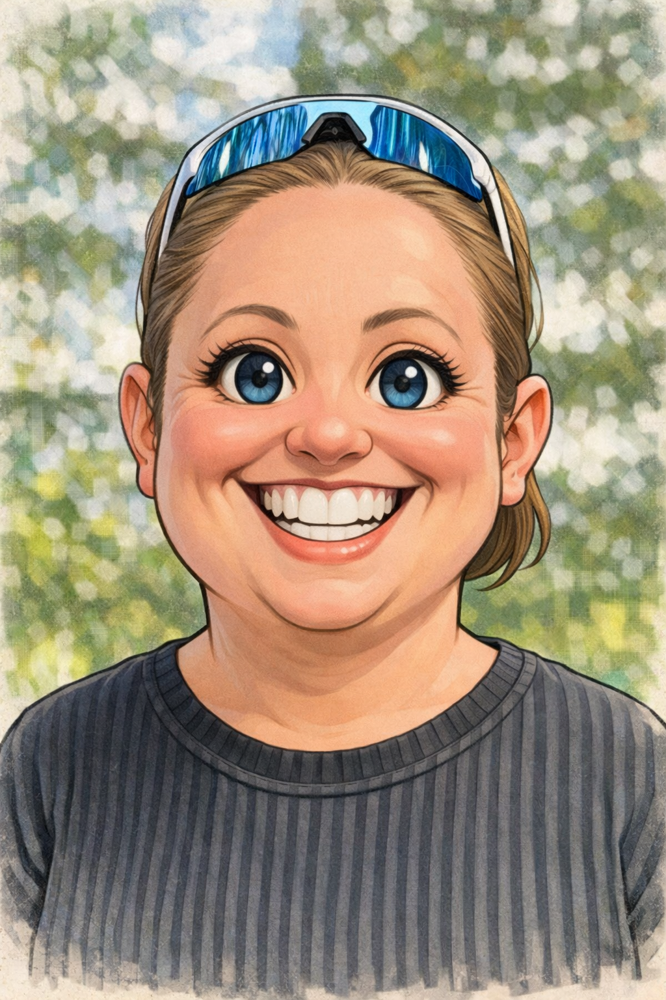

Hi, I’m Trine — an outdoor-loving educator with nearly 15 years of experience guiding curious young minds through forests, fields, and the occasional gloriously muddy adventure. My professional foundation is rooted in outdoor education, where fresh air, resilience, and hands-on learning are part of the everyday curriculum.
Somewhere along the trail, my curiosity expanded beyond the treetops and into the digital landscape. I developed a strong interest in cybersecurity — particularly how we can protect our digital lives, both personally and professionally, without making it overly complicated. That curiosity led me back to university, where I am now deepening my knowledge in cybersecurity and digital safety.
When I’m not working or studying, you’ll most likely find me outside — hiking in the mountains, paddling along the coast, or exploring with a camera in hand. I’m a hobby photographer with a passion for natural light and quiet landscapes. No elaborate gear — just patience, perspective, and an appreciation for the details nature offers.
And this website is part of my ongoing learning journey — a place where I experiment with code, explore new ideas, and try to make sense of the digital world one line at a time. And if there’s one thing I’ve learned so far, it’s that the best journeys happen when curiosity leads the way.
Feel free to follow me on social media: